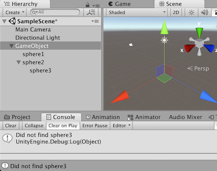

Parameters
| n | Name of child to be found. |
Returns
Transform The returned child transform or null if no child is found.
Description 描述
Finds a child by n and returns it.
If no child with n can be found, null is returned.
If n contains a '/' character it will access the Transform in the hierarchy like a path name.
Note: Find does not perform a recursive descend down a Transform hierarchy.
using UnityEngine; using System.Collections;
public class ExampleClass : MonoBehaviour { public GameObject player; public GameObject gun; public Transform ammo;
//Invoked when a button is clicked. public void Example() { //Finds and assigns the child of the player named "Gun". gun = player.transform.Find("Gun").gameObject;
//If the child was found. if (gun != null) { //Find the child named "ammo" of the gameobject "magazine" (magazine is a child of "gun"). ammo = gun.transform.Find("magazine/ammo"); } else Debug.Log("No child with the name 'Gun' attached to the player"); } }
As described Find does not descend the Transform heirarchy. Find will only search the given list of children looking for a named Transform. The following example shows the result of Find searching for GameObjects. The name of each GameObject is used in the Find. This is why two GameObjects in the same level of the hierarchy are found and reported.

A GameObject with three children. Find() does not find the third child.
// ExampleClass has a GameObject with three spheres attached. // Two of these are children of the GameObject. The third // transform, sphere3, is a child of sphere2. Find() does // not find this child.
using UnityEngine;
public class ExampleClass : MonoBehaviour { void Start() { Transform result;
for (int i = 1; i < 4; i++) { string sph;
sph = "sphere" + i.ToString(); result = gameObject.transform.Find(sph);
if (result) { Debug.Log("Found: " + sph); } else { Debug.Log("Did not find: " + sph); } } } }